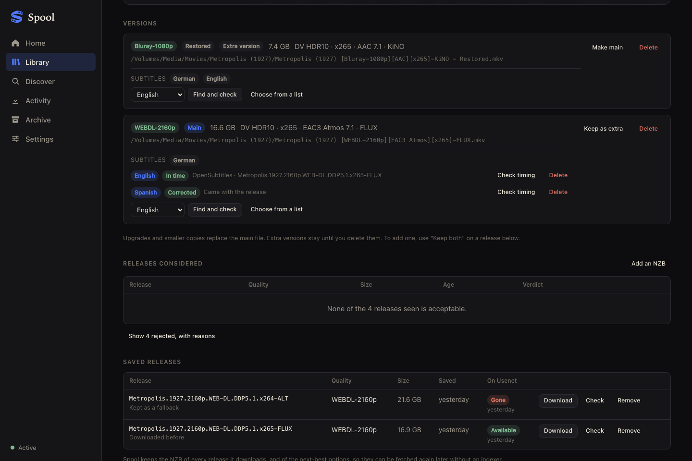
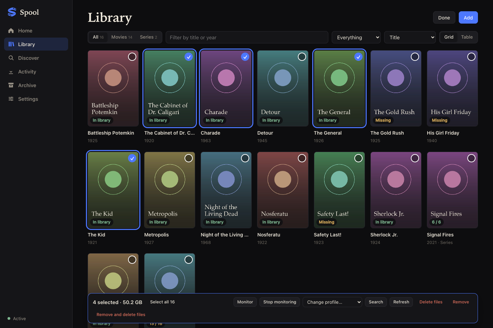
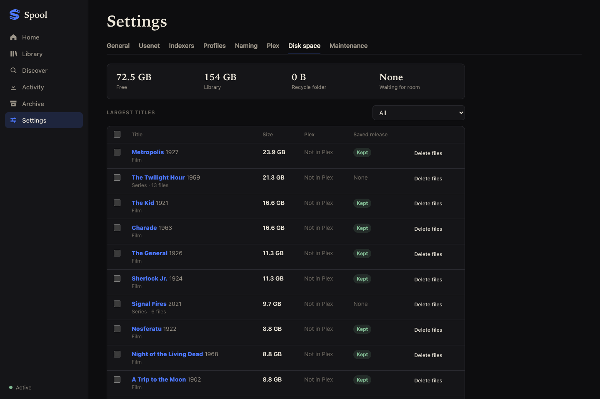

Spool takes the folders you have, wherever they are, and changes nothing it was not asked to. Then it keeps them in order: stories together, subtitles in time, and room on the disk.
The library you already have
Spool can look through a disk or a share from a NAS and bring in the films and shows already there, where they lie. Nothing is moved or renamed to suit it.
Add further disks and shares beside the main library. Each is managed like the main one or only read, in which case Spool lists and plays what is there and writes nothing. More than one place
When a NAS is switched off its titles are shown as offline. Nothing is searched for or downloaded again because files cannot be seen. When a location is away
Send a title, or a whole selection, to another location. Its folder is copied whole and checked before the original is taken away, with progress in Activity and a way to cancel. Moving a title
A film kept on two disks is one entry with both copies, offered to players as versions. A series can have its seasons split between places. One title in two places
An archive of untouched discs and a small disk for everyday viewing want different things. Each location has its own quality profile, and Spool shows how each profile fits what is on disk.
Trailers, extras, your own posters and a media server's notes are recognised under the names Plex, Jellyfin, Emby and Kodi use. An upgrade replaces the film and nothing else. Every name it knows
Before pointing Spool at files you care about, read what it changes and what it never touches.
Collections
Films that belong to a series, and an anime's series, films and side stories, are grouped by themselves: in the library, on players that speak to Jellyfin, and in Plex if you want it there. Collections and anime
Each collection lists its titles in order of release or of the story, says what to watch next, and shows the works you do not have with a button to add them.
Spool reads AniList, which needs no account, to relate a series to its films, OVAs, recaps and spin-offs, and marks the ones that can be skipped.
Rename a collection, reorder it, take a title out or make a collection of your own. Your changes stand over what the sources say.
Subtitles
Fetching a subtitle file is easy. Knowing it is in time with your copy of the film is the hard part, so Spool checks.

In bulk
Select as many titles as you like and act on them together.

Disk space
A full disk stops everything. Spool treats space as part of the job.
